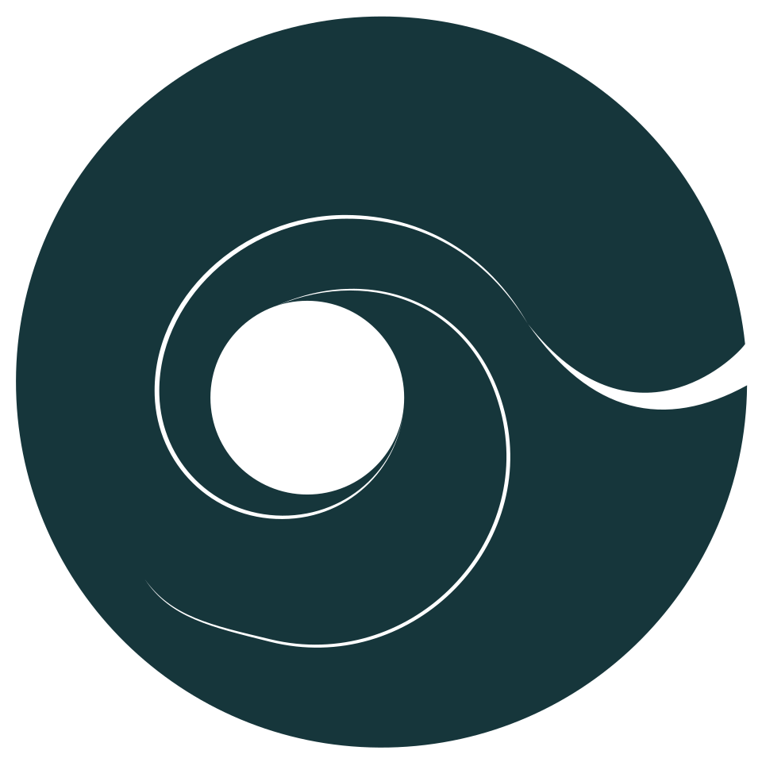

Umfeld
Du stehst in der Mitte. Jeder Mensch ist ein eigener, offener Kreis. Der Abstand zeigt die Nähe, die Linie die Resonanz. Ohne aktive Resonanz bleibt nur der Abstand.

ELANUM Gestaltungsatlas 4.5Du stehst in der Mitte. Jeder Mensch ist ein eigener, offener Kreis. Der Abstand zeigt die Nähe, die Linie die Resonanz. Ohne aktive Resonanz bleibt nur der Abstand.